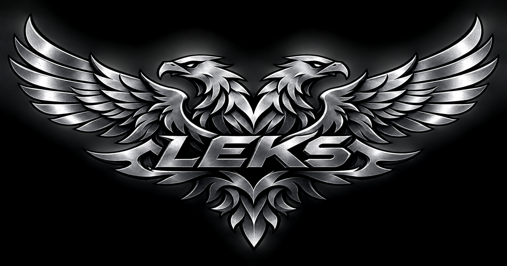

Русские ключевые слова и имена, падежная грамматика и привычные скобки. Пробуйте программы на .lek онлайн или скачайте движок Лексус.
Лексика (её же зовут лекс, лексик, «язык программирования Л») — русский язык программирования: свой лексер, своя морфология, своя грамматика, свой исполнитель. Смысл слова задаёт падеж, а не порядок и не скобки. Лексус — движок и компилятор этого языка. Он же — имя команды в командной строке.
пусть сумма равно пяти.
положить десять в сумму.
прибавить два к сумме.
сказать речь Сумма равна (сумма) конец речи.Вывод:
Сумма равна 12| Что | Как это выглядит |
|---|---|
| Письмо | русские слова, цифры и знаки . , ! ? ( ) |
| Падежи | положить в сумму, прибавить к сумме, длина суммы |
| Склонение | перечень → перечня, покупки → покупок |
| Числа словами | сорок два, две тысячи пятьсот, три запятая пять |
| Замыслы | если … то, пока … повторять, для каждого … из |
| Правила | правило факториал принимает число повторять … конец правила. |
| Данные | перечни, словари, чтение и запись по ключу |
| Заплатки | собрать, наложить, откатить |
| Разум языка | своя нейронная сеть на падеж, число и род, 580 КБ |
| Исполнение | свой байткод и своя стековая машина |
Лексус-установщик.exe — настоящий
исполняемый файл Windows со встроенным python. Ставит всё в
%LOCALAPPDATA%\Лексус, кладёт ярлык на рабочий стол и в меню
«Пуск», сам себя проверяет. Ярлык открывает интерактивную командную строку:
в ней вводят команды лексус запустить файл.lek. Это консольное
приложение, а не графическая IDE. Тихая установка — --тихо, снятие —
--удалить.
sh установить.shpython3 лексус.lek запустить примеры/привет.lek
python3 проверка/тесты.lek
Форматы называются по-русски: .зип вместо zip, .7з
вместо 7z, .трек3 вместо mp3, .вид4 вместо mp4,
.огг, .вебм, .пнг, .жпег,
.жаба вместо java. Заплатки — .патч, настройки —
.настр.
лексус форматы
лексус формат склад.png склад.пнг
лексус формат склад.пнг --обратно склад.pngпусть товары равно перечень(хлеб, молоко, сыр).
для каждого товар из товары повторять
сказать речь Предмет: (товар) конец речи.
конец для.
пусть цены равно словарь().
записать в цены по ключу (хлеб) значение 30.
сказать речь Хлеб стоит (прочитать из цен по ключу хлеб) рублей. конец речи.правило факториал принимает число повторять
если число меньше двух то
вернуть один.
конец если.
вернуть число умножить на факториал(число минус один).
конец правила.пусть счёт равно нулю.
пока счёт меньше трёх повторять
увеличить счёт на один.
сказать речь Шаг (счёт) конец речи.
конец пока.
Лексика — русский язык программирования. Синтаксис целиком русский, файлы
заканчиваются на .lek, движок называется Лексус, внешних
зависимостей нет: нужен только python 3.8 или новее.
Кириллическое расширение не поддерживает встроенный механизм импорта python. Это единственное место, где пришлось отступить от полного русского оформления.
Двойной щелчок по установщику. Внутри уже есть движок, примеры, документы и python для Windows. Права администратора не нужны.
Нет. Встроенная модель русского языка весит около 180 КБ и работает без сети и без графического ускорителя. Внешняя модель с открытыми весами подключается только по желанию.
Падежным управлением вместо порядка слов, полным запретом не-русских знаков и собственным движком: свой загрузчик частей, свои заплатки, свой установщик.
Сейчас настольная версия Лексики использует переходный runtime на Python 3.8+ и стандартную библиотеку Python. Параллельно развивается нативное загрузочное ядро на C11: в нём уже есть обработка UTF-8, начальная морфология, собственные значения, компилятор подмножества языка и виртуальная машина. Это реальная работающая основа для переноса, но пока не полная замена Python-runtime: часть программ продолжает исполняться переходным движком. Цель разработки — довести нативный компилятор и VM до полного исполнения .lek без Python и внешних библиотек, сохранив совместимость языка.
Исходники ядра C11 · План переноса runtime · Документация архитектуры
| Файл | О чём |
|---|---|
| документы/РУКОВОДСТВО.md | язык целиком, от письма до заплаток |
| документы/СЛОВАРЬ.md | все слова, команды и встроенные функции |
| документы/АРХИТЕКТУРА.md | как устроен движок и установщик |
| README.md | общий обзор проекта |
Лексика — открытый проект. Исходный код, устройство движка и история изменений доступны для независимого изучения. Текущий статус компонентов и ограничения реализации описаны в документации репозитория.
Лексику можно изучать постепенно: начать с короткой программы в браузерной
песочнице, затем перейти к файлам .lek и настольному движку Лексус.
Примеры показывают объявления переменных, работу с перечнями и словарями,
условия, циклы и собственные правила. Такой маршрут помогает проверить
синтаксис на небольших задачах до установки среды разработки.
Проект развивается открыто: исходный код, руководство, словарь и описание архитектуры доступны в репозитории. Важно учитывать текущую стадию реализации: настольный runtime пока сохраняет переходную зависимость от Python, а нативное ядро C11 расширяется поэтапно. Перед переносом существующей программы стоит свериться с документацией и проверить используемые конструкции в актуальной версии движка. Сообщения об ошибках и предложения по улучшению можно отправлять через GitHub.